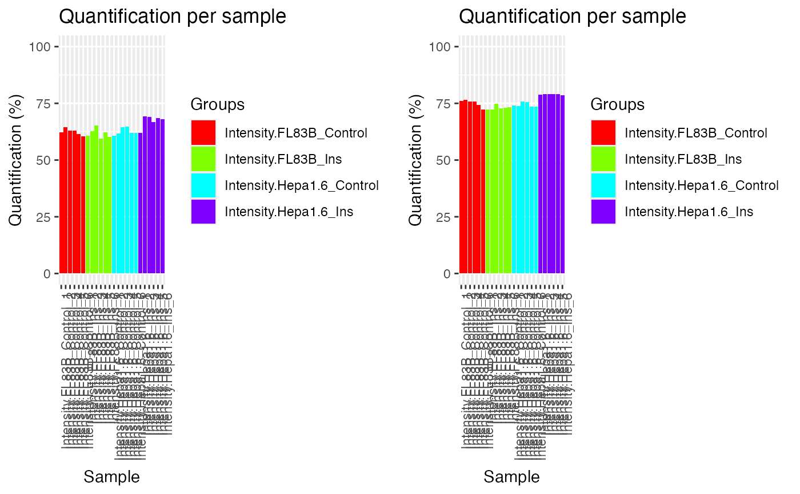
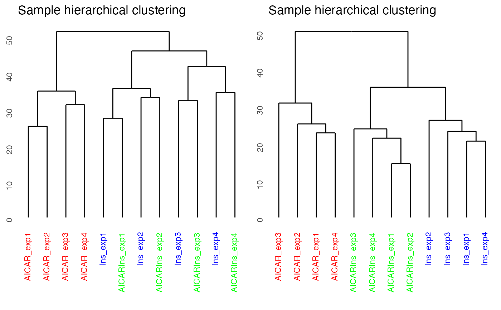
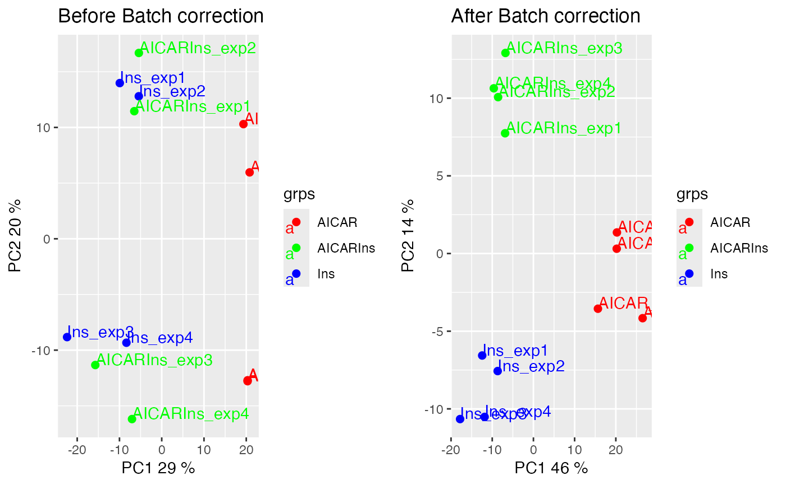

plotQC.RdThe `panel` parameter allows different type of visualisation for output object from PhosR. `panel = "all"` is used to create a 2*2 panel of plots including the following. `panel = "quantify"` is used to visualise percentage of quantification after imputataion. `panel = "dendrogram"` is used to visualise dendrogram (hierarchical clustering) of the input matrix. `panel = "abundance"` is used to visualise abundance level of samples from the input matrix. `panel = "pca"` is used to show PCA plot
plotQC(mat, cols, labels, panel, ...)
| mat | A p by n matrix, where p is the number of phosphosites and n is the number of samples. |
|---|---|
| grps | A vector of colours to be used in the plot. The length should be equal to the columns of the mat. |
| labels | A vector of sample names. Used the label points in PCA plot (panel=4) |
| panel | A type of plot to output. See description for details. |
A graphical plot
# Imputation data('phospho.cells.Ins.sample') grps = gsub('_[0-9]{1}', '', colnames(phospho.cells.Ins)) phospho.cells.Ins.filtered <- selectGrps(phospho.cells.Ins, grps, 0.5, n=1) set.seed(123) phospho.cells.Ins.impute <- scImpute( phospho.cells.Ins.filtered, 0.5, grps)[,colnames(phospho.cells.Ins.filtered)] set.seed(123) phospho.cells.Ins.impute[,seq_len(5)] <- ptImpute( phospho.cells.Ins.impute[,seq(6,10)], phospho.cells.Ins.impute[,seq(5)], percent1 = 0.6, percent2 = 0, paired = FALSE)#>phospho.cells.Ins.ms <- medianScaling(phospho.cells.Ins.impute, scale = FALSE) p1 = plotQC(phospho.cells.Ins.filtered, labels=colnames(phospho.cells.Ins.filtered), panel = "quantify", grps = grps) p2 = plotQC(phospho.cells.Ins.ms, labels=colnames(phospho.cells.Ins.ms), panel = "quantify", grps = grps) ggpubr::ggarrange(p1, p2, nrow = 1)# Batch correction data('phospho_L6_ratio_pe') data('SPSs') grps = gsub('_.+', '', phospho.L6.ratio.pe@colData@rownames) # Cleaning phosphosite label L6.sites = paste(sapply(phospho.L6.ratio.pe@GeneSymbol, function(x)paste(x)), ";", sapply(phospho.L6.ratio.pe@Residue, function(x)paste(x)), sapply(phospho.L6.ratio.pe@Site, function(x)paste(x)), ";", sep = "") phospho.L6.ratio = t(sapply(split(data.frame( phospho.L6.ratio.pe@assays@data$Quantification), L6.sites),colMeans)) phospho.site.names = split( rownames(phospho.L6.ratio.pe@assays@data$Quantification), L6.sites) # Construct a design matrix by condition design = model.matrix(~ grps - 1) # phosphoproteomics data normalisation using RUV ctl = which(rownames(phospho.L6.ratio) %in% SPSs) phospho.L6.ratio.RUV = RUVphospho(phospho.L6.ratio, M = design, k = 3, ctl = ctl) # plot after batch correction p1 = plotQC(phospho.L6.ratio, panel = "dendrogram", grps=grps, labels = colnames(phospho.L6.ratio)) p2 = plotQC(phospho.L6.ratio.RUV, grps=grps, labels = colnames(phospho.L6.ratio), panel="dendrogram") ggpubr::ggarrange(p1, p2, nrow = 1)p1 = plotQC(phospho.L6.ratio, panel = "pca", grps=grps, labels = colnames(phospho.L6.ratio)) + ggplot2::ggtitle('Before Batch correction') p2 = plotQC(phospho.L6.ratio.RUV, grps=grps, labels = colnames(phospho.L6.ratio), panel="pca") + ggplot2::ggtitle('After Batch correction') ggpubr::ggarrange(p1, p2, nrow = 1)